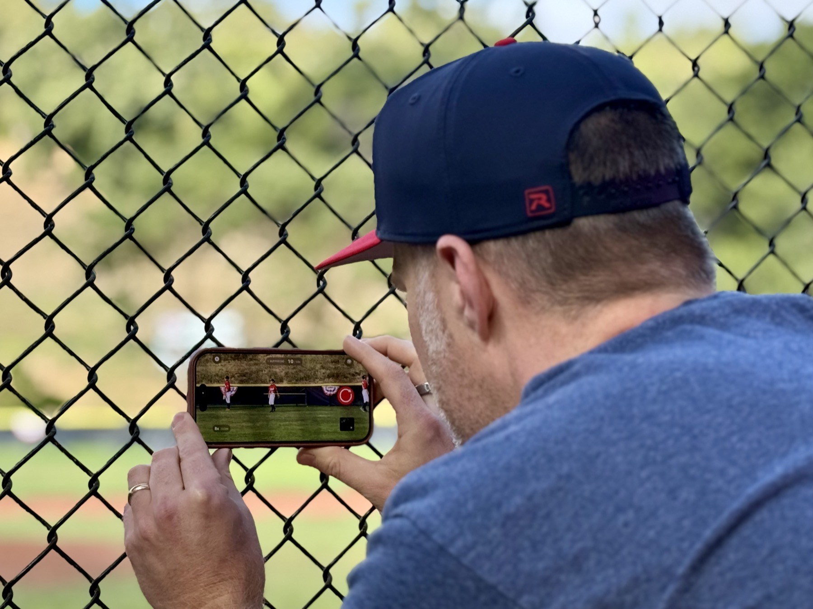
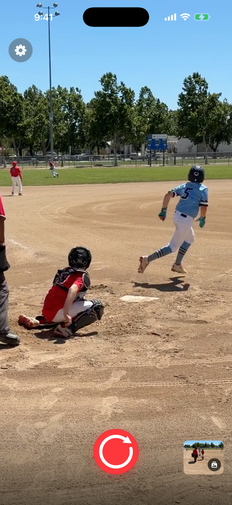
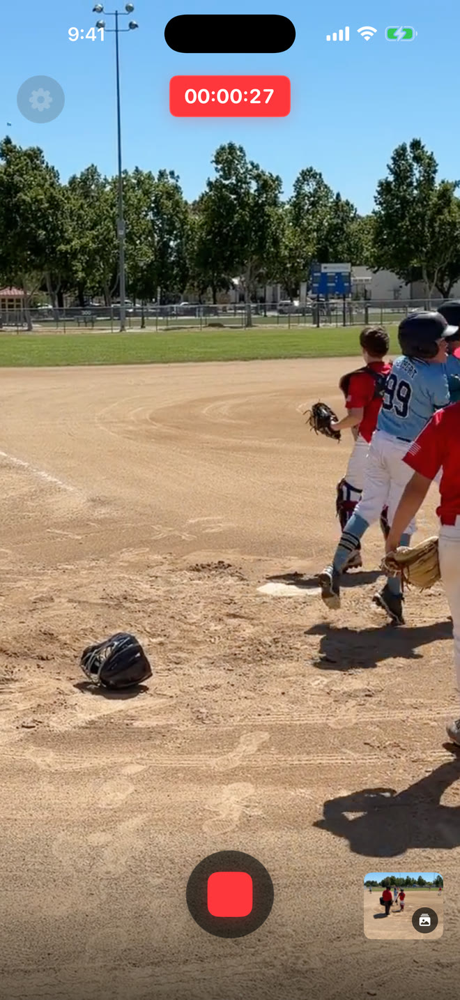
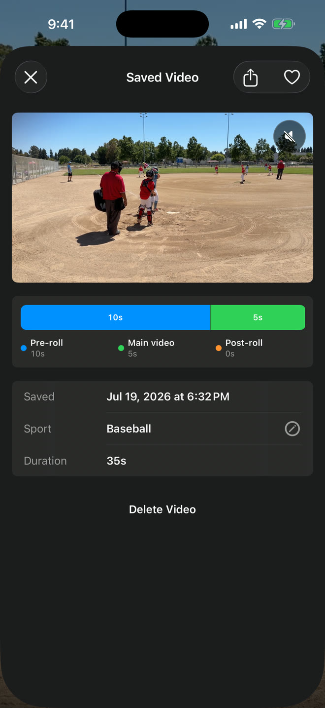
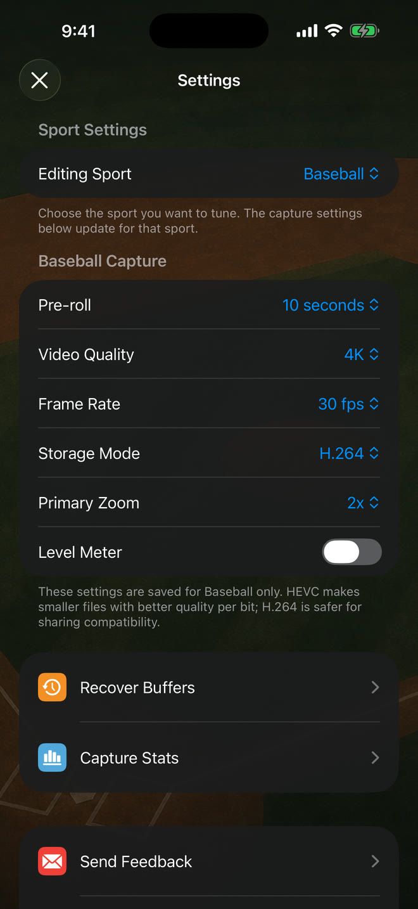

Frame the at-bat
Keep Sideline Save open and the pitcher, batter, and likely play area in view.
Youth baseball & softball video for parents
You don’t have to record the whole game to catch the best moments. Keep Sideline Save open and pointed at the field, then press record when the ball is put in play.

The saved video can still begin with the pitch and swing.
Keep the camera on your player. If the ball comes to them, press record and keep the play that led up to it.
Find the video later in its sport album and replay the swing, throw, or decision with your child.
The camera-roll problem
With the built-in Camera app, you have to decide before the pitch whether to record. That means saving strike after strike, foul ball after foul ball, and long videos where the play never develops.
Sideline Save lets you wait for the moment to prove it is worth keeping. When the batter connects, press record. If the pitch and swing are still within your selected 5-, 10-, or 20-second window, they are included at the beginning of the finished video. Keep recording through the run, throw, or celebration, then press stop.
One at-bat, three actions
Keep Sideline Save open and the pitcher, batter, and likely play area in view.
The video starts with the action already held by Sideline Save, including the pitch and swing when they fit your selected window.
Keep the run, throw, slide, reaction, or celebration, then save the finished video to Photos.
Press record after the play gets good, stop when it is over, and keep the beginning in the finished video.




More than base hits
Press record after contact and continue through the run and the final throw.
Press record when the ball heads into danger and keep the pitch or contact that created the chance.
Press record when the runner breaks and include the pitcher’s delivery and catcher’s response.
Keep the approach, throw, slide, call, and reaction together in one video.
Game-day setup
Good framing makes the saved moment easier to follow, especially once the ball leaves the bat.
Common questions
No. While the app is open, it keeps a short rolling window ready. A video is saved when you press record, continue through the play, and press stop.
Yes, when the pitch and swing fall within the 5-, 10-, or 20-second window you selected and Sideline Save was open with the camera ready.
Yes. Version 1.0 uses the Baseball preset for both baseball and softball recording, with the same timing, framing, saving, and Photos-library workflow.
Sideline Save saves finished videos locally to your Photos library and organizes them in its Saved Videos view. It does not upload your sports footage to a Sideline Save account.
Request iPhone beta access for your next baseball or softball game. Most parents get their TestFlight invite within five minutes.